扉页
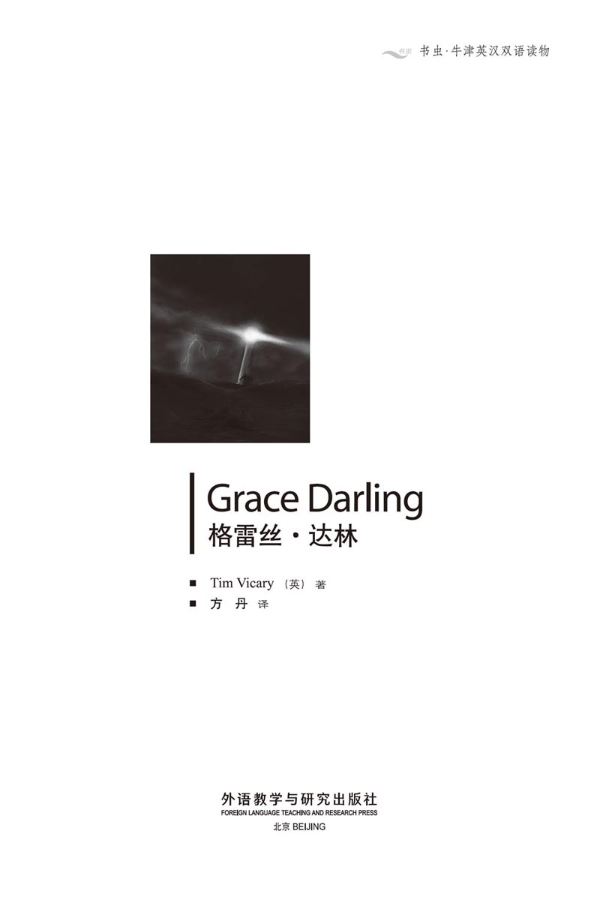
版权页
京权图字01-2006-3293
Originally published by Oxford University Press, Great Clarendon Street, Oxford. © 2000
This edition is licensed for sale in the People's Republic of China only and not for export therefrom.
'Oxford' is a registered trademark of Oxford University Press.
只限中华人民共和国境内销售，不包括香港特别行政区、澳门特别行政区及台湾省。不得出口。
图书在版编目（CIP）数据
格雷丝·达林 = Grace Darling／（英）维卡里（Vicary, T.）著；方丹译．—北京：外语教学与研究出版社，2007.7（2013.7 重印）
（书虫·牛津英汉双语读物）
ISBN 978-7-5600-6818-3
Ⅰ．①格… Ⅱ．①维… ②方… Ⅲ．①英语—汉语—对照读物 ②短篇小说—英国—现代 Ⅳ．H319.4：I
中国版本图书馆CIP数据核字（2007）第104917号
出版人： 蔡剑峰
责任编辑：易 璐
封面设计：孙莉明
出版发行：外语教学与研究出版社
社 址：北京市西三环北路19号（100089）
网 址：http://www.fltrp.com
版 次：2007年7月第1版
书 号：ISBN 978-7-5600-6818-3
制售盗版必究 举报查实奖励
版权保护举报电话：（010）88817519
内容简介
内容简介
大海有很多面。有时它平静温和——如同游泳池般安宁。有时它狂野、暴躁而危险。我们筑堤抵挡大海，大海却把它们冲走。我们造船在海上航行，大海却把它们劈成两截，如同孩子折断玩具。当大海露出其狰狞的一面时，它就像一头野兽，一心只想着杀戮。
当然，你并不害怕大海。你在陆地上很安全，温暖而干燥。但若你是在怒海中的一条小船上，脸上是飞溅而来的海水，耳畔是咆哮不停的海风，那情况就不一样了。对我们来说，要做到不害怕很容易；这只是一本书而已。但对于格雷丝·达林，这不是故事。这是非常真实、寒冷而狂野的夜晚，那一夜她和大海抗争，毫无畏惧。
GRACE DARLING
GRACE DARLING
The sea has many faces. Sometimes it is calm and gentle — as quiet as a swimming-pool. Sometimes it is wild, and angry, and dangerous. We build walls against the sea, and the sea washes them away. We build ships to sail on the sea, and the sea breaks them in two, like a child breaking a toy. When the sea wears its angry face, it is like a wild animal — that wants only to kill.
You, of course, are not afraid of the sea. You are safe on land, you are warm and dry. But it is different when you are on a small boat in an angry sea, with salt water flying into your face and the wind screaming in your ears. For us it is easy not to be afraid; this is only a book. But for Grace Darling it was no story. It was a very real, cold, wild night when she fought with the sea, and was not afraid.
目录
1．The For farshire
The Times London, 19th September 1838
On the afternoon of 6th September, the steamship For farshire began its journey from Hull to Dundee, in Scotland. There were 60 people on the For farshire, which was a big, comfortable, modern ship. There was a strong, north-east wind that afternoon, but at first no one was afraid...
1
The For farshire
Daniel Donovan was a passenger on the For farshire. He stood on the deck of the ship, and looked at the sea. It was difficult to stand on the deck, because the wind was so strong. The ship was moving up and down uncomfortably and Daniel felt ill. Then a big wave hit the side of the ship, and salt water flew into his face.
'The wind is getting stronger,' said a passenger beside him. He was a tall, dark man with a black coat — Mr Robb, a churchman. 'And it's getting darker, too.'
'Yes,' said Daniel. 'I can't see the land now.' He looked to the west, but he could see no land, no lights. Only water — big grey waves with white tops, which went up and down, up and down.
'But the For farshire is a good modern ship,' said Mr Robb. 'Nothing can happen to a new ship like this. Listen to those fine strong engines!'
Daniel looked down at the big paddle wheel on the side of the ship. It went round and round, down under the white water, and up again... under the water, and up. Then he looked up at the black smoke which came from the For farshire's funnel.
'Yes,' he said. 'They're good, strong engines.' But he was not really sure. He was an engineer, so he knew about engines. Sometimes the For farshire's engines made strange noises, and the paddle wheels went round slowly. Then there was a crash, and they went quickly again. Daniel was not happy.
A sea-bird flew low across the white tops of the big, grey waves. Daniel watched it, and felt wind and rain on his face. Then a door opened behind him, and a woman screamed.
'Simon, come back! Come back at once!'
Daniel looked behind him, and saw a small boy. He was running across the deck. He was only three or four years old, and the wind was much too strong for him. He fell over on the deck and began to cry. Then another big wave hit the side of the ship. The white water came over the side and carried the boy along the deck.
'Help!' the woman screamed. 'Save my child!'
Daniel put out a hand and caught the boy's coat. Then he carried him quickly back to his mother.
'Quick! Get back in, out of the wind, woman!' he shouted. He hurried through the door and closed it with a crash. 'It's too dangerous for children out there!'
'Yes, I know,' the woman said. 'Come here, Simon!' She sat down and held the boy with one arm. She had another child in her other arm — a little girl, about one or two years old. 'Thank you, sir,' she said.
The ship moved up and down very quickly, and Daniel sat down beside the woman. She smiled at him, but she looked very white and ill.
'I'm Daniel Donovan,' he said, 'What's your name?'
'Mary Dawson,' she said. 'This is my son Simon, and my daughter Sarah.'
'Isn't your husband with you?'
'No,' she said. 'He's in Scotland. We're going home to see him. It's good we're in a strong, modern ship.'
'Yes,' said Daniel. Then for a few seconds he said nothing. It was quiet in this room. Much quieter than outside.
'Mr Donovan,' said Mrs Dawson suddenly. 'What's happened to the engines? I can't hear them now. Can you?'
Daniel listened. 'My God,' he thought. 'She's right! The engines have stopped!' He could hear the noise of the wind and the sea, but not the engines. 'You're right, Mrs Dawson,' he said. He stood up, and ran to the door. 'Excuse me. I...' But then he opened the door, and his words were lost in the wind.
Outside, he looked up at the ship's funnel. There was no smoke above it. He looked over the side of the ship, at the big paddle wheels. He watched them for two minutes, but they did not move. And all the time the big grey waves lifted the For farshire up and down, and white water blew over the deck.
'What's happening?' screamed Mr Robb. 'Why aren't we moving?'
'The engines have broken down!' shouted Donovan. 'This isn't a sailing ship — it can't move without its engines!'
A big wave hit the side of the paddle wheel and sent white water over their heads. Some sailors were trying to put up a small sail, but the wind belw it out of their hands, away across the sea into the night.
'There are women and children on this ship,' shouted Mr Robb. 'It's nearly dark, and the weather is getting worse. What can we do?'
Daniel looked at him. 'I don't know, my friend,' he shouted back. 'I can't do anything. Why not ask God — you're a churchman! Perhaps He'll send an angel to save us!'
steamship n. non-military ship driven by steam power 汽船，轮船
passenger n. a person, not the driver, traveling in a public or private vehicle 乘客，旅客
deck n. a floor built across a ship over all or part of its length 甲板，舱面
engine n. a machine that changes energy into mechanical force or motion 发动机，引擎
paddle wheel a wheel with boards or paddles affixed around its circumference, usually driven by steam to propel a ship 明轮，桨轮
funnel n. a metal chimney for letting out smoke from a steam engine or steamship （机车或轮船的）烟囱
crash n. a sudden loud noise made e.g. by a violent blow, break, etc. 碰撞声
hurry v. to move or act with speed or haste 快速地移动或行动
lift v. to direct or carry from a lower to a higher position 举起，升高
sail n. a piece of strong cloth fixed in position on a ship to move it through the water by the force of the wind 帆，篷
angel n. a messenger from God 天使
福法尔郡号
《泰晤士报》 伦敦，1838年9月19日
9月6日下午，福法尔郡号轮船开始了从赫尔到苏格兰敦提的航行。福法尔郡号是一艘豪华舒适的新式大船，船上载有60人。那天下午刮着强劲的东北风，但是一开始并没有人感到害怕……
1．福法尔郡号
丹尼尔·多诺万是福法尔郡号上的一名乘客。他站在船甲板上望着大海。由于风势强劲，人很难在甲板上站稳。船上下颠簸得很厉害，丹尼尔觉得很不舒服。接着一个大浪打在船侧，海水飞溅到他脸上。
“风力越来越强了，”他身边的一名乘客说。这位高大黝黑的黑衣男士是罗布先生，一位牧师，“而且天也越来越黑了。”
“是的，”丹尼尔说，“现在我已经看不见陆地了。”他向西望去，但是看不见陆地，也看不见任何亮光。他只看见海水——顶着白色浪尖的灰色巨浪不断地起伏汹涌。
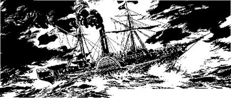
“但是福法尔郡号是一艘优良的新式海船，”罗布先生说，“这样一艘新船是不会出事的。听听那些精良有力的引擎发出的声音。”
丹尼尔低头看船侧的巨大桨轮，它们不停转动，时而深入白色的水下，时而钻出水面……周而复始。接着他抬起头来，看着福法尔郡号烟囱里冒出的黑烟。
“是的，”他说，“它们是强有力的引擎。”但他其实并不肯定。他是一名机械师，熟悉引擎。福法尔郡号的引擎时不时会发出异常的噪音，桨轮也转得缓慢。接着会发出撞击声，桨轮又恢复快速转动。丹尼尔忧心忡忡。
一只海鸟低空飞过灰色巨浪的白色浪尖。丹尼尔盯着它，感觉风雨打在自己脸上。突然他身后的一扇门打开了，一个女人在尖叫：
“西蒙，回来！马上回来！”
丹尼尔往身后一瞧，看到一个小男孩。他正从甲板那边跑过来。他只有三四岁，这风对他来说是太大了。他摔倒在甲板上，哭了起来。正在这时又一个巨浪击中船侧，白色的海浪冲过船舷，把小男孩沿着甲板冲出了一段距离。
“救命啊！”那女人尖叫道，“救救我的孩子！”
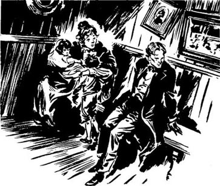
丹尼尔伸出一只手抓住了男孩的外套，然后飞快地把男孩抱还给他的母亲。
“快！回里面去，别待在风里，女士！”他喊道。他迅速走进舱门，使劲把门砰地关上。“孩子在外面太危险了！”
“是的，我知道，”女人说，“过来，西蒙！”她坐下来，用一只胳臂搂着男孩。她的另一只胳臂里还抱着一个孩子——一个一两岁大的小女孩。“谢谢您，先生。”她说道。
船颠簸得厉害，丹尼尔在这个女人身边坐下来。她冲他笑了笑，但她看起来苍白而虚弱。
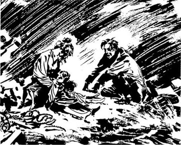
“我叫丹尼尔·多诺万，”他说，“您叫什么名字？”
“玛丽·道森，”她回答说，“这是我的儿子西蒙和女儿萨拉。”
“您丈夫没和您一起吗？”
“没有，”她说，“他在苏格兰呢，我们现在就是回去看他。幸好我们坐的是一艘坚固的新式轮船。”
“是啊。”丹尼尔说。接着他沉默了几秒钟。客舱里很安静，比外面安静多了。
“多诺万先生，”道森夫人突然说，“引擎怎么了？我听不见响了，您能听见吗？”
丹尼尔听了听。“天哪，”他想，“她说得对！引擎已经停了！”他能听到狂风和大海的喧嚣声，但听不到引擎的声音。“您说得对，道森夫人。”说着他站了起来，向门口跑去。“失陪一下，我……”但接着他打开门，话音随之消散在风里。
到了外面，他抬头看轮船的烟囱——上面没有冒烟。他从船侧探头察看巨大的桨轮，看了两分钟，但它们一动不动。而灰色的大浪一直载着福法尔郡号不断上下颠簸，白色的水花飞溅到甲板上。
“出什么事了？”罗布先生尖叫道，“为什么我们原地不动了？”
“引擎出毛病了！”多诺万大叫着说，“这不是帆船，没有引擎它就动不了！”
一个巨浪击中桨轮，激起的浪花飞过他们头顶。一些水手试图升起一面小帆，但大风将它从水手们手里刮了出去，飘向大海远处，最后消失于夜色中。
“船上还有妇女和孩子，”罗布先生喊道，“天快黑了，天气越来越糟。我们该怎么办？”
丹尼尔看着他。“我不知道，我的朋友，”他回喊道，“我无能为力。干吗不问问上帝——您可是一位牧师！也许上帝会派一位天使来救我们！”
2．The Lighthouse
2
The Lighthouse
When the engines stopped, the For farshire was about five kilometres east of St Abbs Head, in Scotland. The ship was travelling north, from Hull to Dundee. But the wind came from the north, so the For farshire, without her engines, began to go south again, back to England. It was dark, and the wind was very strong.
About thirty kilometres south-east of St Abbs Head is a group of small rocky islands not far from the mainland. These are the Farne Islands. On one of them, Longstone Island, there is a lighthouse. There were three people in the lighthouse that night — William Darling, his wife Thomasin, and their daughter Grace. Grace's brothers were usually there too, but that night they were in Bamburgh, on the mainland.
At seven o'clock that night, William Darling went up the long stairs of the lighthouse to light the big oil lantern. Grace went with him. William Darling was a thin, strong man about fifty years old. He moved quickly and quietly. He had a candle in his hand. Sometimes he turned to talk to Grace, and the candlelight lit up the big brown eyes in his kind, old face.
Grace was a young woman about twenty-two years old. She was not very tall or strong. She had big brown eyes like her father, and soft brown hair. She carried an oil can in one hand, and held the side of her long skirts with the other hand. She smiled at her father while they talked.
At the top of the lighthouse Grace and her father came into a small room. This room had no walls — just big windows all around. The noise of the wind and rain was terrible here, and they had to shout to hear each other.
Grace put oil in the big lantern in the middle of the room, and William lit it. When the lantern was burning, the big silver mirrors began to move slowly around it. William Darling and his daughter stood and watched them. The rain crashed against the windows, and the wind screamed like an animal in the night.
'God help the poor sailors to see this light,' shouted William. 'It's as dark as death out there. No moon, no stars — nothing but wind and rain and wild white water.'
'Let us pray there are no ships near the rocks,' shouted Grace. 'The storm will wreck any ship that comes near them tonight.'
'That's true, lass,' said William. 'But we can do no more now. Let's go down to supper.'
The father and daughter went slowly down the dark, narrow stairs to the kitchen. Grace's mother, Thomasin, was putting the supper on the table. She was a whitehaired woman of sixty-five.
'Did you see anything?' she asked.
'No, my love, nothing,' William answered. 'Only the rain on the windows.'
'Thank God,' she said. 'You couldn't help anyone tonight, William. If there is a shipwreck, you can do nothing. The boys aren't here.'
'But, mother,' Grace said. 'Father has to try to save people. It's his job. He can't leave them to die.'
'Grace, no man could row a boat by himself in this wild sea,' said Thomasin. 'So let us thank God that there are no poor ships near us, on this terrible night.'
'Yes, Grace, let us thank God for that,' said William. And so the three people sat quietly around their table in the warm kitchen, and put their hands together to pray. In the black night outside, the wind screamed, and the big waves crashed against the rocks, again and again and again.
lighthouse n. a tall structure with a powerful light that guides ships or warns them of dangerous rocks 灯塔
lantern n. a lamp consisting of a metal or glass container surrounding a flame or light 灯笼，提灯
can n. a usually round metal container 金属制的圆柱形容器
wreck v. to undergo ruin or disaster 使毁灭，使遇难
shipwreck n. the destruction of a ship, as by storm or collision 船只失事，海难
row v. to propel (a boat) with or as if with oars （用桨或桨状物）划船
灯塔
2．灯塔
当引擎停下来时，福法尔郡号正位于苏格兰圣阿布斯海角以东约五公里处。轮船由赫尔向北航行去往敦提。但是风从北面来，于是，失去了引擎的福法尔郡号开始往南漂移，那是回英格兰的方向。天黑了，风非常大。
在圣阿布斯海角东南面大约三十公里处靠近陆地的地方，有一片岩石小岛，是法恩群岛。在其中的长石岛上有一座灯塔。当晚，灯塔里有三个人：威廉·达林，他的妻子托马辛，还有他们的女儿格雷丝。平时格雷丝的哥哥们也在那儿，但是那天晚上他们去了陆上的班堡。
晚上七点钟，威廉·达林爬上灯塔长长的楼梯去点燃巨大的油灯。格雷丝和他同行。威廉·达林五十上下，瘦小精干，行动迅速而安静。他手里拿着一根蜡烛，不时转过头来和格雷丝说话，烛光照亮了他苍老和蔼的脸上那双棕色的大眼。
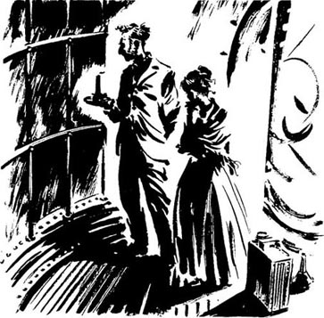
格雷丝很年轻，约二十二岁，长得不高也不强壮。她有一双和父亲一样的棕色大眼睛，以及柔软的棕色头发。她一只手拎着一个油罐，另一只手提着长裙的裙摆。她一边说着话，一边冲着父亲微笑。
到了灯塔顶上，格雷丝和父亲走进一个小房间。这个房间没有墙壁，四周都是大窗户。这里的风雨声大得吓人，他们必须大声喊才能听见对方在说什么。
格雷丝将油倒进屋子中央的大灯里，威廉把它点燃。当灯燃烧起来，银光闪闪的大镜子开始围着它缓慢转动。威廉·达林和女儿站在一边看着。雨水撞击着窗户，狂风如同黑夜中的野兽一般咆哮着。
“愿上帝帮助可怜的水手们看到这亮光，”威廉喊道，“外面死黑死黑的，没有月亮，没有星星——除了风雨和汹涌的海浪，什么也没有。”
“让我们祈祷暗礁附近没有船只吧。”格雷丝喊道，“今晚所有靠近暗礁的船只都会被风暴摧毁。”
“没错，女儿，”威廉说，“但除了祈祷我们也无能为力。我们下去吃晚饭吧。”
父女俩缓缓走下黑暗狭窄的楼梯，来到厨房。格雷丝的母亲托马辛正把晚饭端上桌子。她是一位六十五岁的白发妇人。
“你们看到什么了吗？”她问。
“没有，亲爱的，什么也没有，”威廉回答说，“只有窗户上的雨水。”
“感谢上帝，”她说，“今晚你谁也帮不了，威廉。如果有船只失事，你无能为力。儿子们都不在。”
“但是妈妈，”格雷丝说，“爸爸必须尽力救人，这是他的工作，他不能见死不救。”
“格雷丝，今天大海这么凶猛，没人能独自划船出海，”托马辛说，“就让我们感谢上帝，保佑在这样可怕的夜晚我们附近没有可怜的船只。”
“是的，格雷丝，我们求上帝保佑吧。”威廉说完，三个人安静地围坐在温暖的厨房的桌旁，合起手来祈祷。屋外的黑夜中，大风呼啸，巨浪撞击着礁石，一遍，一遍，又一遍。
3．In the Engine Room
3
In the Engine Room
'Mr Donovan!'
'Yes.'
'The captain wants to see you. You're an engineer, aren't you? Come this way, please.' The sailor opened a door and Daniel went quickly inside. They went down some stairs. He opened another door, and a great cloud of steam came out. Daniel followed the young sailor into the room. It was very hot in here, and there were clouds of steam everywhere. A tall, red-faced man came up to him.
'Mr Donovan? My name's Humble, Captain Humble. We need you, sir. You're an engineer, I understand. One of these engines has already stopped, and the other is working very badly. There's too much steam in this room, sir, and not...'
A big wave hit the ship with a terrible crash and Daniel, Captain Humble and the young sailor held onto the wall. Daniel saw a big man in a blue coat, and shouted to him.
'Are you the ship's engineer?'
'Yes!' The man looked angry, tired, and frightened.
'What's the matter? Why has this engine stopped?'
'Why? Because it's too old, of course! Look here! See this? And this...' For five minutes the two engineers moved around in the steam and smoke, and looked at the big engines.
'See? It's broken here, and here! How can I mend it now, in the middle of a storm? Can you do that, sir?'
Daniel shook his head. He was angry and frightened. 'No, of course I can't! The ship must go back to land!'
The man agreed quickly. 'That's right, that's what I say! But you tell Captain Humble that! He says this is a new, modern ship, so it can go anywhere, in any weather! Our rich passengers want to go to Scotland, so that's where we're going, he says! But it's too dangerous and...'
The man stopped when Captain Humble came near. 'Well, Mr Donovan? Can you help us? Do you know more about engines than this stupid engineer here? He says he can do nothing, and we must go back to Hull, because of a small storm! But I'm sure...'
'He's right, Captain Humble!' shouted Daniel. 'I can do nothing for these engines here, in this storm! They're too old, and this one is broken in three places! We must go back to land, Captain, or we will all drown! I cannot help you!'
'Gaaaaaargh!' The captain pushed Daniel angrily away from him. 'Then get out of my way, Mr Donovan — you're no good to me! Get back to the women and children!'
Daniel went quickly to the door, and up the stairs to the wind and rain outside. But he was a badly frightened man. His hands were shaking, and it was hard for him to stand in the terrible screaming wind. Above his head, two sailors were putting up a small sail. 'That's no good,' he thought. 'It's too small for a big ship like this. Without engines, we can do nothing.'
He stared out to sea, but he could see nothing — only the white tops of the great black waves, and the black clouds above. No stars, no moon. But — far away to the south-west — there was a little light flashing. On... off... on... off. It went behind a wave, and then came back again, like a star in the night sky, far away.
But it was coming nearer. Nearer all the time.
captain n. the person in command of a ship 船长
mend v. to make repairs to 修理
frightened adj. scared 受惊的
drown v. to die by being under water and unable to breathe 溺死，淹死
flash v. to shine suddenly and brightly for a short time 闪光，闪烁
机舱里
3．机舱里
“多诺万先生！”
“哎。”
“船长要见您。您是机械师，对吧？这边请。”水手打开一扇门，丹尼尔迅速走进去，他们下了几级台阶。他又打开一扇门，一大团蒸汽扑面而来。丹尼尔跟随年轻的水手走进房间，里面很热，到处都是一团团的蒸汽。一个高大的红脸男人向他走过来。
“多诺万先生是吗？我是亨布尔，亨布尔船长。我们需要您，先生。我知道您是机械师。两个引擎有一个已经停了，另一个现在运行得也很糟糕。这屋子里蒸汽太多了，先生，而且不……”
随着一声巨响，一个大浪击中轮船，丹尼尔、亨布尔船长和那名年轻的水手紧紧抓住墙壁。丹尼尔看到一个身穿蓝色外套的大个子，就向他喊道：“你是这艘船的机械师吗？”
“是的！”这个男人看上去很生气，很疲倦，而且很恐惧。
“出什么问题了？引擎为什么停了？”
“为什么？当然是因为它太旧了！看看这儿！看到了吗？还有这里……”这两名机械师在蒸汽和烟幕里绕着巨大的引擎查看了五分钟。
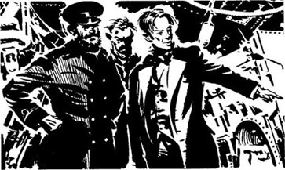
“看到了吗？这里坏了，还有这里！这会儿在暴风雨里，我怎么修理？您能吗，先生？”
丹尼尔摇摇头，他又怒又怕：“不，我肯定不能！这艘船得立刻回到岸边去！”
这个男人马上表示同意：“对，我也是这么说的！但是你得跟亨布尔船长说！他说这是一艘新式的新船，所以它哪儿都能去，什么天气也不怕！我们船上有钱的乘客们想去苏格兰，所以那里才是我们的目的地，他这么说的！但这太危险了，而且……”
亨布尔船长走了过来，他便住了口。“怎么样，多诺万先生？您能够帮助我们吗？您是不是比这个愚蠢的机械师更懂引擎呢？他说他无能为力，因为这么一场小小的风暴我们就必须回赫尔去！但是我相信……”
“他是对的，亨布尔船长！”丹尼尔喊道，“在这样的暴风雨里，我对这些引擎也无能为力！它们太旧了，光这一个就有三个地方坏了！我们必须回岸边去，船长，否则我们都会淹死的！我帮不了您！”
“啊——见鬼！”船长恼怒地把丹尼尔从身边推开，“那就别挡我的道儿，多诺万先生——你对我没用处了！回到女人和孩子中间去吧！”
丹尼尔疾步走到门口，上了台阶来到风雨交加的外面。但是他着实被吓到了。他的双手在颤抖，而且他很难在呼啸的狂风中站稳。在他上方，有两个水手在升一面小帆。“没用的，”他想，“对这么大一艘船来说，那帆太小了。没有引擎，我们什么也干不了。”
他向海上望去，却什么也看不到——只有漆黑巨浪的白色浪尖和天上的乌云，没有星星，没有月亮。但是——在西南方向远远的地方——有一点微弱的亮光，忽明忽暗，闪烁不定。它一会儿被大浪挡住，一会儿又重新跃出来，就像夜空中的一颗星，那么遥远。
但它正在靠近，越来越近。
4．Nothing to See
4
Nothing to See
It was half past two in the morning. In the lighthouse, Grace was asleep in her room. It was a small, tidy room, with white walls. Her dress was on the back of the door, and her other clothes were on a chair by the bed. There were some books on a desk, and some sea-birds' eggs on a table.
Someone knocked at the door. 'Grace!' her father's voice called. 'Wake up, lass. I need you to help me.'
'What is it, father?' She got up quickly, and opened the door. William Darling stood there with a candle in his hand. He was wearing his big black coat and heavy boots, and his hat was pulled down over his ears. His face was tired, and wet with rain.
'The storm is worse. The wind is coming from the north now, and it's stronger. We shall have to go outside and tie the boat down, or we shall lose it!'
'All right. I'll be down in a minute.' Quickly, Grace closed the door and put her clothes on. She often got up in the night. There was always work on a lighthouse, and the sea did not wait for morning. A minute later, she ran downstairs to the kitchen, put a coat over her thin dress, tied her hair under her hat, and followed her father out into the night.
The wind nearly lifted her off her feet. It was strong, black, hard, and wet. She opened her mouth to call to her father, but the words blew away into the night. Her coat and dress blew out behind her like paper, and the rain hit her face, like small stones.
She walked slowly after her father, to the boathouse. Her father was carrying a small lantern, and in its light Grace saw a great wave of white water. It broke against the rock in front of the boathouse, and white water crashed against the boathouse doors. William shouted something to Grace but she could not hear him — the sounds of the wind and the sea were too loud, too terrible.
In the boathouse, she helped her father tie the boat down to the rock. They tied down the oars, too, so that nothing could move them. Then they ran outside and carried everything into the kitchen — their chickens, their fishing things. Nothing could stay outside on a night like this.
Before they went back in, Grace stared out into the night. The light from the top of the lighthouse flashed out over the water, and for thirty seconds she could see very well. One after another, the big, black waves came out of the darkness — waves ten, twenty metres high! When they hit the rock there was a huge crash, and white water flew everywhere, thirty, forty metres up over the Longstone rock.
Grace stared out, over the waves, past the rocks and islands. But — thank God! — she could see no lights, no ships. No ship could live in that sea tonight.
'Grace! Come on in, lass!' Her father held the door open behind her. She went in quickly, and he closed the door behind them. Her mother had warm drinks ready for them.
'Go to bed now, father,' Grace said. 'You've had no sleep yet tonight. I'll watch the light now, and mother can come up at five.'
'All right, lass,' he said. William was very tired. He went upstairs with his wife, and in two minutes they were asleep.
Grace finished her drink quickly, and changed out of her wet clothes. Then she went up alone to the room with the big windows at the top of the lighthouse. The wild wind screamed and shook the glass.
It was half past three in the morning.
tidy adj. orderly and neat in appearance or habits 整齐的，整洁的
boot n. a covering of leather or rubber for the foot and part or all of the leg 长靴
boathouse n. a building at the water's edge in which boats are kept 船库，船屋
watch v. to pay attention to; to take care of 看守，看护
什么都看不见
4．什么都看不见
凌晨两点半。灯塔里，格雷丝在自己的房间里睡觉。这是一个整洁的小房间，墙壁雪白。她的裙子挂在门后，其他衣服放在床边的椅子上。书桌上有一些书，桌子上有一些海鸟蛋。
有人敲门。“格雷丝！”是她父亲的声音，“醒醒，女儿。我需要你的帮助。”
“怎么了，爸爸？”她飞快地下床，打开房门。威廉·达林手握蜡烛站在那里。他身着黑色大外套，脚穿一双厚重的靴子，帽子拉低盖住了耳朵。他满脸倦容，被雨水淋得湿漉漉的。
“暴风雨变大了。现在风从北方刮来，越来越猛。我们必须出去把船拴好，否则我们可能会失去它！”
“好的，我马上下去。”格雷丝迅速关上门穿好衣服。她经常半夜起来。在灯塔总有活儿可干，而且大海从不会等天亮再发作。一分钟后，她跑到楼下的厨房，在单薄的裙子外面罩上一件外套，把头发束到帽子里，然后跟着父亲出门，走进夜色里。
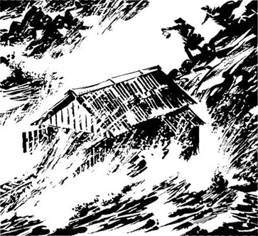
大风几乎将她吹起来了。黑夜里，狂风夹着雨水，凶猛而潮湿。她张开嘴要喊父亲，但声音被风声淹没，消散在黑夜里。她的外套和裙子如同纸片一般被风吹到身后乱舞着，雨水像小石子一样打到她脸上。
她尾随父亲缓步来到船屋。父亲拎着一个小提灯，借着灯光，格雷丝看到一个巨大的白浪打在船屋门前的礁石上飞溅开来，浪花飞到船屋的门上。威廉向格雷丝喊着什么，但她听不见——风声和海浪声太大，太猛烈了。
在船屋里，她帮助父亲把船绑到礁石上；他们还绑好了船桨，这样它们就不会被冲走。然后他们跑出来，把所有东西——包括他们养的鸡和渔具——都带回厨房。没有什么能经得住今晚外面的风雨。
进屋前，格雷丝向茫茫夜色中眺望。灯塔顶上发出的光洒到水面上，有三十秒钟她能看得很清楚。黑色的巨浪接二连三地从黑暗中扑出来——海浪足有一二十米高！它们撞击到礁石就会迸发出巨大的声响，水花四溅，飞到长石岛上空三四十米高的地方。
格雷丝放眼眺望大海远处，越过海浪望向礁石和岛屿的前方。但是——谢天谢地！——没有亮光，没有船只。今晚没有船能从海上生还。
“格雷丝！快进去，女儿！”父亲在她身后撑着门。她迅速进屋，他随手带上门。她的母亲为他们准备好了热饮。
“去睡吧，爸爸，”格雷丝说，“您今晚还一会儿都没睡过呢。现在我来照看灯，妈妈可以五点上来。”
“好吧，女儿。”他说。威廉非常疲惫。他和妻子一起上楼，没两分钟就睡着了。
格雷丝很快喝完东西，换下湿衣服，然后一个人来到灯塔顶上有大玻璃窗的房间。狂风呼啸，摇撼着窗玻璃。
此刻是凌晨三点半。
5．The Shipwreck
5
The Shipwreck
In the passengers' sitting room on the For farshire Mrs Dawson looked unhappily at Daniel, Mr Robb, and two other men — Thomas Buchanan and James Kelly. Her two children were crying in her arms. 'I'm so frightened. Do you think we're going to die? What can we do, Mr Donovan, without the engines?'
'Not much, Mrs Dawson,' said Daniel slowly. 'But there are some islands, south of here, called the Farne Islands. They are very near. I've seen the lighthouse flashing on them. I think the captain is trying to go into the quieter water between the islands and the mainland. I... I'll go outside again, to see how near the lighthouse is. I'll come back and tell you.'
Daniel got up and went out into the night. It was raining hard now, and the wind was screaming from the back of the ship. He stared into the dark. He could see nothing in the west. Where was the light? He walked carefully across the ship, to the other side. Suddenly he fell on the wet deck, and he caught the side of the ship with his hands. Then he looked up, and a light flashed into his eyes. There it was — the lighthouse, only three hundred metres away, to the north!
'But this is wrong!' he thought. 'We're too close! Much too close! I must tell the captain!'
He stood up and began to run along the deck. But there in front of him, a great mountain of white water flew into the sky... ten... twenty metres above the ship.
'Rocks!' screamed Daniel. 'Rocks! There are rocks in front of us, rocks all around! Captain! CAPTAIN!'
The captain was already shouting at the sailors, and the ship was turning, turning to the west, away from the light. But it was too late. There was a great crash, and Daniel and all the sailors fell to the deck. Then another crash... and another. The waves lifted the For farshire and threw it onto the rock, like a child playing with a toy.
Daniel held onto a rope, and stared into the dark. The light flashed again from the lighthouse. Then he looked back along the ship. People were running out onto the deck, and screaming.
Then another very big wave hit the ship. White water flew everywhere, and fell on Daniel like stones. He heard a terrible crash, and more water fell on him. He opened his eyes, and looked back along the ship.
But there was nothing there.
Nothing but black water, and more waves. The ship was broken in two, and the back of the ship, with the captain and all the rich passengers, was not there.
A voice shouted into the wind. 'God help us! Save us from the sea, oh God!' The door of the passengers' room was broken. But there were still some people inside the room — Mr Robb, Mrs Dawson and her two children, Mr Buchanan, and James Kelly. Mr Robb was praying loudly.
Daniel went carefully back along the deck to the broken door. He put out his hand to touch it, and then a wall of white water hit the ship, and he could see nothing.
toy n. an object for children to play with 玩具
rope n. a flexible, heavy cord of tightly intertwined cotton or other fibre 绳，绳索
海难
5．海难
在福法尔郡号的乘客起居室里，道森夫人忧心忡忡地看着丹尼尔、罗布先生和另外两个男人——托马斯·布坎南和詹姆斯·凯利。两个孩子在她怀中哭泣。“我吓坏了。您觉得我们会死吗？没有了引擎我们该怎么办，多诺万先生？”
“没多少办法，道森夫人，”丹尼尔缓缓地说，“但是这里有一些岛屿，就在南边，叫法恩群岛。它们离这儿很近。我看到岛上灯塔的闪光了。我想船长正在试图驶入群岛和大陆之间平缓的水域。我……我再出去一趟，看看灯塔有多近。我会回来告诉您的。”
丹尼尔站起来，走入外面的夜色中。此刻雨下得很大，风从船尾呼啸而来。他向黑暗中望去，西边什么都没有。刚才的亮光在哪边来着？他小心翼翼地走到船的另一边。突然他滑倒在湿漉漉的甲板上，他用双手抓住船侧，然后抬头一看，一道亮光闪入他的眼帘。就在那里——那座灯塔，就在三百米以外，就在北边！
“可这样不对！”他想，“我们靠得太近了！实在太近了！我得告诉船长！”
他站起来，沿着甲板跑。但就在他面前，排山倒海般的巨浪冲上天空……高出船十米……二十米。
“暗礁！”丹尼尔喊道，“暗礁！我们前面有暗礁，周围都是！船长！船——长——”
此刻船长已经在冲着水手们大喊了。船在转向，朝西转，偏离了亮光的方向，但为时已晚。随着一次剧烈的撞击，丹尼尔和所有水手都摔倒在甲板上。接着又一次撞击……再一次。巨浪将福法尔郡号抛起来，又摔到暗礁上，就像一个孩子扔着玩具。
丹尼尔抓住一根绳子，向黑暗中凝视——灯塔的亮光又闪烁了一下。接着他回头看看船上，人们尖叫着，纷纷跑到甲板上。
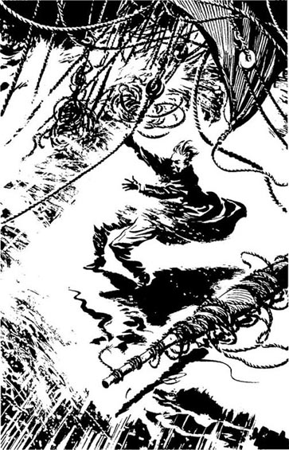
就在此时，又一个巨浪击中轮船。四溅的水花像石头般砸在丹尼尔身上。他听到一声可怕的撞击声，更多海水落到他身上。他睁开眼，回头看船上。
但那里什么也没有。
空无一物，只剩深沉的海水和接踵而来的浪涛。船断成两截，船的后半部分，还有上面的船长和所有有钱的乘客，都不见了。
一个声音在风中呼喊：“上帝救救我们吧！把我们从海里救出去，噢，上帝！”客舱的门被冲坏了，但舱里还有一些人——罗布先生、道森夫人和她的两个孩子、布坎南先生和詹姆斯·凯利。罗布先生正在大声祈祷。
丹尼尔小心翼翼地沿着甲板回到损坏的门那儿。他伸出手去摸门，此时一排幕墙似的海浪击中船身，他什么都看不见了。
6．Out of the Window
6
Out of the Window
At twenty to five that morning, Grace felt a hand on her face. It was her mother. Grace was nearly asleep. The wind was screaming and shaking the big windows, and Thomasin Darling had to shout.
'Go to bed, Grace! It's nearly morning. I'll look after the lantern now.'
'All right, mother.' Grace got up slowly and went downstairs to her bedroom. It was much quieter in her room because of the strong stone walls. She looked at the birds' eggs on her table, the books on the desk near the bed. The bed looked warm and comfortable. She smiled, and began to get undressed.
A little grey light was coming in through the window. 'It's nearly morning,' she thought. 'I'll look at the sea, before I go to sleep.'
She walked to the window and looked out. But she could see nothing, because of the salt and rain on the glass. 'It doesn't matter,' she thought. 'I'm too tired. I'll go to bed.'
But before she went to bed, she prayed. And when she prayed, she heard a voice in her head. 'Go to the window, Grace,' it said. 'Go and look out.'
So she got up, went to the window, and opened it. The wind blew strongly into the room. It blew her hair across her face, and some books fell on the floor. In the grey morning light, Grace looked out across the sea.
Most of the rocks and small islands were under water. Big white waves were breaking over them. The sea was wild, frightening, terrible. Grace looked, and felt cold. She could not remember a storm as bad as this. She thought of her warm bed, and began to close the window.
Then she saw the ship.
It was a big ship, on Harker's Rock, about three hundred metres away to the south-west. A very big ship, but it was broken in two, with white water breaking all over it. Grace could not see it very well, because of the rain and the sea.
'Father! Father! Come quick!' She ran out of the room, down the stairs to her parents' bedroom. 'Come quick! There's a ship on Harker's Rock! A big one — a passenger ship! It's broken in two!'
William Darling was out of bed in a second. He put on his boots and coat and followed Grace up the stairs. 'Did you see any people?'
'No, father. But it's difficult to see anything in this wild sea.'
Her father took a telescope from his pocket and stared out of Grace's window at the wreck of the For farshire. He looked for a long time, then said, 'I can see no one, but my eyes are old. You look, lass.'
Grace stared carefully through the telescope. White water crashed over the wreck. Sometimes the ship moved on the rock, and sometimes pieces of wood fell off into the sea. But she saw no people.
'No, father. I think they have all drowned.'
'Poor, poor people.'
'Yes, but it's a good thing too, William.' Grace's mother was in the room now, and she was looking out of the window with her husband and daughter.
'Why is that, Thomasin?' William asked her.
'Why? Because the boys aren't here, William. You couldn't take a boat out in that wild sea alone. No one could. If there are people alive on that ship now, you cannot save them, William.'
'I could go with him, mother,' said Grace quietly.
'Not in a sea like that, Grace,' her mother said.
Her father said nothing.
'We mustn't stop looking,' said Grace. 'If there is someone alive, we can't just leave them to die.'
And so, for the next two hours, Grace and her parents watched the wreck of the For farshire through the telescope. Slowly, daylight came. But they saw no people... only rain, and waves, and a broken ship in the wild angry sea.
look after to take care of 照顾，照看
undress v. take off one's clothes 脱衣服
telescope n. a tubelike scientific instrument that makes distant objects look nearer and larger 望远镜
daylight n. the light of day; sunlight 日光，阳光
窗外
6．窗外
凌晨四点四十分，格雷丝感觉有一只手在抚摸她的脸。是她的母亲。格雷丝都快睡着了。狂风呼啸，摇撼着大窗，托马辛·达林不得不大声喊。
“去睡觉吧，格雷丝！天快亮了。现在我来看着灯。”
“好的，妈妈。”格雷丝缓缓站起来，下楼回到自己的卧室。因为有结实的石墙，她的房间里安静多了。她看了看桌上的鸟蛋和床头书桌上的书。床看起来温暖舒适。她笑了，开始脱衣服。
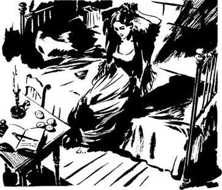
一丝灰暗的光透过窗户照到房间里来。“天快亮了，”她想，“我要先看看海，再睡觉。”
她走到窗前向外望去，但因为窗玻璃上有盐渍和雨水，她什么也看不清。“没关系，”她想，“我太累了，我要睡觉了。”
但是在上床睡觉之前，她做了祷告。就在祷告时，她听见头脑里有个声音。“到窗户那里去，格雷丝，”那个声音说，“去看看外面。”
于是她站起来，走到窗前，打开窗户。风猛烈地刮进房间，把她的头发吹到脸上，一些书掉到地板上。趁着灰蒙蒙的晨光，格雷丝向海上眺望。
大多数暗礁和小岛都在水下。海水撞击着它们，迸发巨大的白浪。大海疯狂可怕，令人生畏。格雷丝看着看着，感到一阵寒意。她记忆中从没有过像这么恶劣的暴风雨。她想念自己温暖的被窝，于是开始关窗户。
就在这时她看到了那艘船。
这是一艘大船，就在哈克礁上，西南方向大约三百米远的地方。它的确是艘巨大的轮船，但已经折成两截，白色的浪花在船周四溅。由于雨水和海水交杂，格雷丝无法看清。
“爸爸！爸爸！快来！”她奔出房间，来到楼下她父母的卧室，“快来！哈克礁上有一艘船！一艘大客船！它已经断成两截了！”
威廉·达林立刻跳下床，穿上靴子和外套，跟着格雷丝上楼。“你看到有人吗？”
“没看到，父亲。但是海上狂风巨浪，很难看清什么。”
她父亲从口袋里拿出一架望远镜，透过格雷丝的窗户眺望福法尔郡号的残骸。他看了很久，然后说：“我没看到人，但我的视力不行，你来看看，女儿。”
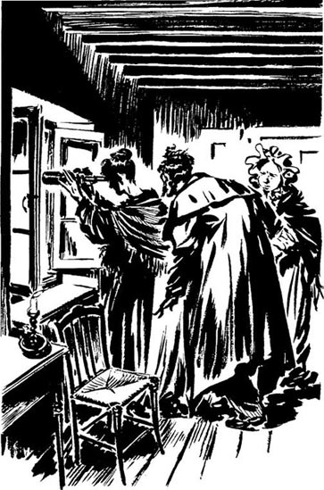
格雷丝透过望远镜聚精会神地看着。白色的海浪不断冲刷着船的残骸。船时而在礁石上动一下，时而有几块木头掉进海里。但是她一个人也没看到。
“没有人，爸爸。我猜他们全淹死了。”
“可怜，可怜的人们。”
“是啊，但这也是件好事，威廉。”格雷丝的母亲进了房间，和丈夫、女儿一起向窗外眺望。
“为什么，托马辛？”威廉问她。
“为什么？因为儿子们不在，威廉。你不能独自一人驾船到狂风暴雨的海上去。没人办得到。就算那艘船上现在还有人幸存，你也救不了他们，威廉。”
“我可以和爸爸一起去，妈妈。”格雷丝平静地说。
“这样的海上不能去，格雷丝。”她母亲说。
她父亲没说话。
“我们不能停止搜寻，”格雷丝说，“如果还有人幸存，我们不能置之不理，眼看着他们死去。”
于是，在接下来的两个小时里，格雷丝和父母一起用望远镜关注着福法尔郡号的残骸。慢慢地，天亮了。但他们一个人也没看到……只有大雨、波涛和怒海中的一艘破船。
7．On Harker's Rock
7
On Harker's Rock
There were twelve people on Harker's Rock. Daniel Donovan was with Mrs Dawson and her children, and there were eight other people near them. The wreck of the For farshire was behind them, between them and the lighthouse.
They were nearly dead with wet and cold. Every two minutes, white water fell on them. Daniel had lost his coat, and the wind cut through his thin shirt like a knife. His hands and legs were red with blood. Mrs Dawson was crying and sat with her arms around her two small children. Mr Robb prayed in a loud voice without stopping. Thomas Buchanan and the other men sat together, too cold to move. One man had a broken leg.
The waves got bigger, and the people on the rock moved closer together. After half an hour Mr Robb, the churchman, stopped praying. Daniel looked at him. He was lying on the rock, his face white and cold. His eyes were open, but he did not see Daniel's hand in front of his face. He was dead.
'We'll all be dead soon,' shouted Thomas Buchanan angrily. 'No man can live long here, in this wind.'
'Why don't they come from the lighthouse to save us?' shouted James Kelly.
The lighthouse! Daniel remembered it suddenly. 'We must wave to it!' he shouted. 'They can't see us here! Come up onto the top of the rock! Wave to them!'
Daniel and James Kelly climbed to the top of the rock, but at first the others did not move — they were too cold, too tired, too frightened. Thomas Buchanan had to hit them and push them to the top of the rock.
The wind was very strong there, so it was difficult to stand. They held onto the rock and shouted and waved at the lighthouse as hard as they could.
No one answered. Behind the wild sea and the rain, the lighthouse stood still and quiet. A few minutes later, the light stopped flashing. But they saw nobody. One by one, the men came down from the top of the rock, and sat with their arms around each other, out of the wind. Only Daniel and Thomas Buchanan stayed on top of the rock. They waved and shouted and cried, but they saw no one. Their faces were as cold as death, and salty and wet from the sea.
cut v. to penetrate with a sharp edge 穿透
lie v. to place oneself at rest in a flat position 躺
wave v. to make a signal with an up-and-down or back-and-forth movement of the hand or an object held in the hand 挥手，招手
哈克礁上
7．哈克礁上
哈克礁上有十二个人。丹尼尔·多诺万陪在道森夫人和她的孩子们身边，他们附近还有八个人。福法尔郡号的残骸就在他们身后，在他们和灯塔之间。
他们浑身湿透，快冻死了。海浪每隔两分钟就劈头盖脸地浇他们一通。丹尼尔的外套丟了，寒风像刀子一样刺透他单薄的衬衣。他的手上和腿上全是血。道森夫人坐在地上哭泣，臂弯里搂着她的两个孩子。罗布先生一刻不停地大声祷告。托马斯·布坎南和其他人坐在一起，冷得无力动弹。其中一人还折了腿。
海浪越来越大，礁石上的人靠得越来越紧。半小时后，牧师罗布先生停止了祷告。丹尼尔看着他。他躺在礁石上，脸苍白而冰冷。他双眼圆睁，但看不到丹尼尔的手在他面前挥动。他死了。
“很快我们全都会死的，”托马斯·布坎南怒吼道，“在这儿，在这样的大风里，没人能活得久。”
“灯塔的人怎么不来救我们？”詹姆斯·凯利喊道。
灯塔！丹尼尔突然记起它来。“我们得向它挥手！”他喊道，“他们看不见我们在这儿！上到礁石顶上来！向他们挥手！”
丹尼尔和詹姆斯·凯利爬到礁石顶上，但一开始其他人都没有动——他们太冷，太累，太害怕了。托马斯·布坎南不得不动手打人，把他们推到礁石顶上。
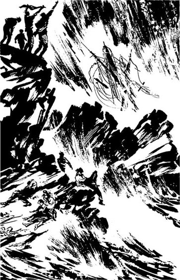
那里的风非常大，因此很难站稳。他们抓紧礁石，用尽全力一边呼喊一边向灯塔挥手。
没人回应。灯塔在怒海和暴雨的另一边安静地伫立着。几分钟后，灯光停止了闪烁。但他们没看到人。这些人一个接一个地从礁石顶上下来，相拥而坐，为彼此挡风。只有丹尼尔和托马斯·布坎南留在礁石顶上。他们挥手喊叫，但是他们没看到人。他们的脸被咸咸的海水浇湿，冰冷如铁。
8．The Worst Sea This Year
8
The Worst Sea This Year
Grace saw them first. Her mother was cooking breakfast in the kitchen, and her father was turning off the lantern. Grace was still looking out of her window through the telescope. For a second she saw a man on top of the rock, then she could not see him behind the waves. But a minute later she saw him again — and there were two men this time. They stood together and waved wildly. Then the rain came, and she could see nothing. But perhaps there were four, or five? She put down the telescope and called her father.
'Father, come quick! There are men on the rock! They are still alive!'
William Darling ran into the room. He saw them. He put down the telescope and looked at his daughter.
'We must go, lass,' he said quietly. 'You and I. We must take the boat and save them. Will you come?'
'Of course, father,' she said. 'If we don't save them, who will?'
'That's right, lass.' William Darling looked out of the window, unhappily. 'I've not seen a worse sea this year. No boat could come from the mainland in this wind.'
Grace's mother came into the room, and heard him. 'You can't go, William!' she said. 'Grace is only a girl. Look at that sea! You'll both drown!'
'We have to try, mother!' said Grace angrily. 'Think of those poor people, alone on that rock. We live on a lighthouse — it's our job!'
'It's a job for your father and brothers, Grace, not you! You'll drown! How will that help those men?'
'How will it help them if we do nothing?'
Thomasin Darling looked out of the window again, at the wild, angry sea. She shook her head. 'Perhaps you'll get to the rock, Grace,' she said. 'With God's help and the wind behind you. But you'll never get back against the wind. Not one man and a girl in a storm like this. Never.'
William Darling took his wife's hands in his. 'Listen to me, Thomasin,' he said. 'There are three or four seamen on that rock. Strong men. They'll help row us back, if we save them.'
'If you save them,' said Thomasin. 'And if you don't... ?'
At first William Darling did not answer. He looked into his wife's eyes. 'We're going, Thomasin,' he said quietly. 'We have to go. Come down now and help us with the boat.'
Outside, in the terrible wind and the rain, it took them fifteen minutes to get the boat ready. Three times the waves nearly broke the boat on the rock. William got in first, and sat at the front. Grace and her mother held the boat away from the rocks. William got two oars ready, and waited for the next wave.
'All right, Grace! Get in now!' he shouted.
Grace jumped into the boat, and William pulled hard with the oars. One... two... three pulls, and then a wave lifted the boat and the oars were pulling at air. But they were away from the rocks. The boat came down between two waves, and Grace quickly got her oars out. They both pulled hard together, but carefully too. They did not want to lose an oar in the wild water. Grace was cold and her dress and hat were wet. She was afraid, but happy and excited too. 'This is what God wants me to do,' she thought. At the top of a wave she could easily see across the Longstone rock to the other side. Then the boat went down between the waves and she could see only mountains of wild water everywhere.
'Pull left! Left!' William shouted. 'We must keep the rocks between us and the worst waves!'
Grace pulled hard at her oars, and watched the waves. 'God will help us save them!' she thought happily. 'I know He will.'
Outside the lighthouse, Thomasin Darling watched the little boat. She saw it for a second, then it went behind a wave, and came up again. 'It's not possible,' she thought. 'No boat can live in a sea like that! Oh God, please — save my husband and daughter!'
She watched and prayed, and the little boat got smaller and smaller on the wild, grey sea.
cook v. to prepare (food) for eating by applying heat 烹调
seaman n. a mariner or sailor 水手，海员
pull v. to operate (an oar) in rowing 摇桨，划桨
excited adj. being in a state of excitement; emotionally aroused 兴奋的
今年最糟的海况
8．今年最糟的海况
格雷丝最先看到了他们。她的母亲在厨房做早餐，父亲熄灯去了。格雷丝还在透过望远镜向窗外远望。有一会儿她看见礁石顶上有一个人，接着海浪挡住，她就看不见他了。但是片刻之后，她又看见他了——而且这次是两个人。他们站在一起，发疯似的挥着手。接着下起雨来，她就什么都看不到了。但也许那里有四个人，或者五个？她放下望远镜，呼叫父亲。
“爸爸，快来！礁石上有人！他们还活着！”
威廉·达林冲进房间。他看到了他们。他放下望远镜，看着女儿。
“我们必须去，女儿，”他平静地说，“你和我。我们必须划船去救他们。你愿意吗？”
“当然了，爸爸，”她说，“如果我们不救他们，还有谁救他们？”
“不错，女儿。”威廉·达林看着窗外，忧心忡忡，“我今年还没见过比这更糟的海况。这样的风势下，陆地的船不可能来这里。”
格雷丝的母亲进房来，听到了他的话。“你们不能去，威廉！”她说，“格雷丝只是个姑娘家。看看那海！你们俩都会淹死的！”
“我们必须试试，妈妈！”格雷丝生气地说，“想想那些可怜的人，孤零零地在礁石上。我们以守灯塔为生——这是我们的工作！”
“这是你父亲和哥哥们的工作，格雷丝，不是你的！你会淹死的！这样能帮助那些人吗？”
“难道我们坐视不管就能帮他们吗？”
托马辛·达林又看了一眼窗外狂野汹涌的大海。她摇摇头。“也许你们到得了那块礁石，格雷丝，”她说，“在上帝的帮助和风力的推动下到达那里。但是顶着风，你们永远都回不来了。一个男人加一个姑娘，在这样的暴风骤雨中是绝对办不到的。绝对不行。”
威廉·达林握住妻子的手。“听我说，托马辛，”他说，“礁石上有三四个海员，都是壮汉。如果我们救了他们，他们就可以帮助我们把船划回来。”
“如果你们救了他们，”托马辛说，“那如果你们救不了呢？”
威廉·达林一开始没有回答。他盯着妻子的眼睛。“我们要去，托马辛，”他平静地说，“我们必须去。现在下楼来帮我们备船。”
他们顶着外面的狂风暴雨，花了十五分钟才将船备好。有三次大浪几乎将船撞毁在礁石上。威廉先上了船，坐在船头。格雷丝和她母亲拉着船不让它撞到礁石。威廉准备好两只桨，等待着下一浪的来临。
“好了，格雷丝！上船，现在！”他喊道。
格雷丝跳上船，威廉用力划桨。一下……两下……三下，突然一个巨浪将船身托起，船桨划在了空气中。但他们离开了礁石。船下落到两股波涛之间，格雷丝迅速将她的桨拿出来划。他俩一同奋力地划着桨，不过也很小心翼翼，因为他们可不愿意在这样的巨浪里丢失船桨。格雷丝很冷，她的衣服和帽子全湿了。她很害怕，但同时也快乐和兴奋。“这是上帝要我做的事情。”她心想。在浪尖上时，她可以轻易地看到长石岛另一边的礁石。接着船落到两股海浪之间，她就只能看到四周山一样的巨浪。
“往左划！左边！”威廉喊道，“我们必须让礁石处在我们和最凶猛的海浪之间！”
格雷丝用力划桨，同时注意着海浪。“上帝会帮助我们救他们！”她高兴地想，“我知道他一定会！”
托马辛·达林在灯塔外盯着这艘小船。它一会儿看得见，一会儿被海浪挡住，一会儿又重新冒出来。“这是不可能的，”她想，“没有船能在这样的海里生还！上帝呀，求求您——救救我的丈夫和女儿！”
她一边注视着一边祈祷，小船在汹涌阴沉的海上越来越小。
9．Angel in the Storm
9
Angel in the Storm
'Help me, Mr Donovan! Please help!'
'How can I help you, woman?' Daniel shouted at Mrs Dawson. 'How can anyone help?' He was too cold, too frightened, too tired. He couldn't think now.
'Please help my children!' cried Mrs Dawson. 'Keep them warm for me — they're so cold!'
Daniel put his arms around the woman and her children. It was true. The children were cold — very cold. Their eyes were open, but they were not moving. He tried to warm them with his hands. He shook them, but they did not move.
'It's no good, woman!' he said. 'No one can...'
'They're not dead yet!' screamed Mrs Dawson. 'I know they're not dead!' She looked into her children's faces. 'Wake up, Simon! Sarah! God will save us soon. Please don't die!'
Daniel was tired and angry. 'Don't be stupid, woman!' he shouted at her. 'We're all going to die, don't you understand? No one knows we're here!'
Mrs Dawson stared at him. Her face was wet with rain, and her hair was blowing in her eyes.
'God will send someone!' she said. 'He must! I know He will!'
'Who's He going to send? An angel?' Daniel laughed angrily, and looked at the wild, empty sea.
But Mrs Dawson was still screaming. 'Someone must come!' she shouted. 'We can't die here! Go to the top of the rock and look again! Tell them about my children!'
'Your children are... ' But he was afraid to say it. He turned away, angry with himself, and climbed to the top of the rock. The wind screamed in his ears. He looked across to the lighthouse and saw nothing — only waves, and more waves. 'I hate the sea!' he thought. 'It's like a great grey animal with a hundred white teeth. I hate it! It wants to kill us all!'
And then he saw the boat.
He saw it only for a second. It was on top of a white wave. It went down behind the wave, but then it came up again. Down, and up again. And it was coming nearer! A little boat with two people in it. He held the rock and stared at it. The boat came nearer, and nearer still. Then a great mountain of a wave came, with white angry teeth, and the little boat went down behind it.
'No!' Daniel cried. 'No, please God! No!'
The boat came up on top of the wave, with white water all around it. The oars were up, out of the water. For a second the boat began to turn on its side, then the oars went down into the water and the boat came down the side of the wave. Daniel could see the two people in the boat now. One was a man. One was a young woman.
He got up and ran down the rock. He was crying and laughing at the same time. 'It's all right, Mrs Dawson!' he shouted. 'It's all right! Look there! Look! Your angel is coming!'
hate v. to feel intense dislike toward 憎恨，厌恶
暴风雨中的天使
9．暴风雨中的天使
“帮帮我，多诺万先生！请帮帮我！”
“我怎么帮您，女士？”丹尼尔朝道森夫人喊道，“谁能帮您？”他太冷了，太害怕了，也太疲惫了。他现在已经无法思考。
“请救救我的孩子！”道森夫人哭喊道，“帮我暖暖他们——他们太冷了！”
丹尼尔搂住这个女人和她的孩子。没错，孩子们很冷——特别冷。他们的眼睛睁着，却不动。他试着用双手温暖这两个孩子。他摇晃他们，但他们一动不动。
“没用了，女士！”他说，“没人能……”
“他们还没死！”道森夫人尖叫起来，“我知道他们没死！”她盯着孩子们的脸，说：“醒醒，西蒙！萨拉！上帝马上就会来救我们了。求求你们不要死！”
丹尼尔又累又气。“别傻了，女士！”他向她喊道，“我们都会死，你还不明白吗？没人知道我们在这里！”
道森夫人盯着他。她的脸被雨水打湿了，头发被吹到了眼睛里。
“上帝会派人来的！”她说，“他一定会的！我知道他一定会的！”
“他派谁来？天使吗？”丹尼尔恼怒地笑起来，眼睛望着狂暴而空旷的大海。
但道森夫人还在尖叫。“肯定有人会来！”她喊道，“我们不能死在这儿！再去礁石顶上看一遍！告诉他们我的孩子们在这儿！”
“您的孩子们已经……”但他不敢说出来。他很生自己的气，转过身爬到礁石顶上。狂风在他耳边呼啸。他远眺灯塔，但什么也没看见，只有一波未平一波又起的海浪。“我恨这大海！”他想，“它就像一只长着一百颗白牙的灰色巨兽！我恨它！它想杀光我们所有人！”
就在这时，他看见了那只小船。
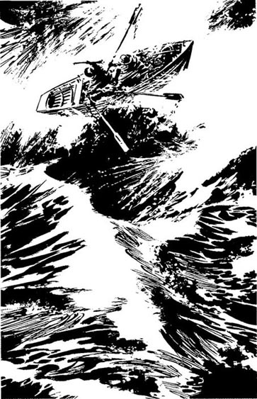
他看见了它，就那么一秒钟。小船在一个白浪的浪尖上。它一会儿被波浪挡住，一会儿又再次出现。再消失，再出现。而且它正在靠近！那艘小船上有两个人！他抓住礁石，目不转睛地看着。小船近了，又近了。突然一个大山般的巨浪卷过来，龇着白牙，来势汹汹，小船隐没在它的身后。
“不！”丹尼尔喊起来，“不，求求你，上帝！不要！”
小船又出现在浪尖上，四周被浪花包围着。船桨朝上举起，不在水里。有那么一刻小船开始往一侧倾斜，这时船桨没入水里，小船便顺着波浪降下来。现在丹尼尔可以看清船里的两个人了，一个男人和一个年轻的姑娘。
他站起来跑下礁石，又哭又笑。“这下好了，道森夫人！”他喊道，“没事了！往那儿看！看！您的天使来了！”
10．Too Many People
10
Too Many People
Grace looked quickly behind her, and saw the people on the rock. They were waving, shouting, laughing. But there were eight, nine, perhaps ten of them! Too many for this small boat.
She looked back at the waves and pulled hard and carefully with her oars. It was more than a kilometre around the islands from the lighthouse to the ship, and every wave, every rock was different and dangerous. She was tired now, but the job was not finished. The wrecked ship on Harker's Rock was still fifty metres away.
'How many can you see, Grace?' her father shouted.
She looked again. 'Ten... twelve perhaps,' she said. 'It's too many, father. We'll all drown, if they try to get in.'
'Yes. Put me on the rock, lass, and then take the boat out again,' shouted William. 'I'll talk to them. We can't take more than five, the first time.'
It was very dangerous near the rock. In the best place, the waves went up and down two or three metres every minute. 'If we make one mistake,' Grace thought, 'the boat will break into fifty small pieces, and we'll be on the rock with the others.'
Carefully, slowly, Grace and her father tried to get the boat near the rock, but three times they had to pull away at the last minute. Then, the fourth time, William Darling jumped. The passengers pulled him onto the rock.
Grace quickly rowed the boat out to sea again. She was alone in the boat now, and the boat moved differently. She was tired, and her arms and back were hurting. But she knew about boats. 'Watch the sea all the time.' she told herself. 'The waves must meet the front of the boat first, or the boat will turn over. Forget the cold, and the rain, and the wet. God will help me.'
On the rock, William Darling spoke quickly. 'I'm going to take the woman back with me,' he said. 'And that man there, with the broken leg. Then I need three strong men, to help me row the boat.' He looked at Daniel Donovan, and two others. 'You, man, and you, and you. The others must wait here. We'll come back for you later.'
'No, by God! Why me?' shouted James Kelly. 'I want to come now!'
'You're going to stay here, sir!' shouted William angrily. 'Don't you understand? If you get in the boat, we'll all drown!'
'And my children,' cried Mrs Dawson, 'don't forget my children!'
William looked at her unhappily. He held out his arms. 'Give the children to me, mother,' he said.
Carefully, he took the boy and the girl from her, and put the little bodies on the rock, near the sea. They were dead and cold. 'They are in God's hands, mother,' he said. Then he spoke quickly and quietly to Daniel Donovan. 'When the boat comes, help me get the woman in. We can't take her children.'
Daniel agreed. William put his arm around Mrs Dawson, and waved to Grace.
Carefully, slowly, she rowed the boat in to the rock. It was harder without her father. The wind and the waves moved the boat more quickly, and Grace was very tired now. One mistake meant death for them all. She came closer — twenty metres, ten, seven, five... A big wave lifted the boat, then a smaller one behind it. She pulled hard on the oars, and threw a rope to a man on the rock. Then her father got into the boat, with a woman in his arms. She was screaming.
'My children! Bring the children, please!'
'No, mother.' William Darling took the oars. 'Help her, Grace.'
Grace went to the back of the boat with the woman, and held her. Daniel Donovan and two other men got in. They were carrying the man with the broken leg. The front of the boat was very near the rock now—too near. Grace looked behind her, and saw a big wave.
'Pull, father!' she shouted. 'Pull hard!' She stood up, and pushed against the rock with an oar. The boat was very heavy now, with all these people in it.
William pulled hard with his oars. The big wave came in, and broke into white water all around them. But the boat did not hit the rock. William pulled again, and shouted. 'You men help me! Take the oars. One each!'
The little boat was very full. The sides were only just above the water, and often the water came in. Grace threw it out with her hat. The wind and waves were against them now, and the four men had to row hard. But slowly, very slowly, the lighthouse came nearer. At last, from the top of the waves, they could see Thomasin Darling. She was standing in front of the lighthouse, and waving to them.
They were very tired when they got to the lighthouse. William and Daniel carried the man with the broken leg into the kitchen, and Grace and her mother helped Mrs Dawson.
Inside the kitchen, William smiled at his daughter. 'You did a good job, lass,' he said. 'Thank you.'
'I'll come back again with you, father,' she said.
'No,' he said. 'You're too tired. I'll take two of these.' He looked at Daniel and the other two men. 'Which are the strongest?' he asked.
Daniel was very tired. There was a fire in the kitchen — a warm, beautiful fire. He wanted to lie down in front of the fire and go to sleep for a long, long time. But William Darling's quiet brown eyes were looking at him.
'I'll come with you,' Daniel said.
'I'll come too,' said Thomas Buchanan.
William Darling smiled. 'Good men,' he said. 'Can you two men row as well as my daughter?'
Daniel looked at Grace, who was busy helping Mrs Dawson. She looked very small, here, in the kitchen — like any young woman. 'I'll try,' he said.
'Right,' said William. 'Come on then.'
So Daniel and Thomas Buchanan followed the old lighthouseman away from the warm kitchen fire, out into the rain and wind again. Daniel looked at the angry sea with its terrible waves, and he felt cold and frightened. He remembered the small young woman alone in the boat by Harker's Rock. 'Great God,' he thought. 'You made that girl strong, like an angel. Make me strong, too, like her.'
The Times London, 19th September 1838
Mr Darling and his young daughter saved nine people from the wreck of the For farshire. The storm lasted for three days, and they stayed all that time with the Darlings in the lighthouse.
Queen Victoria thinks that Grace Darling is one of the finest young women in this country, and she is writing to thank her. One hundred years from now, people will remember this day.
different adj. unlike in form, quality, amount, or nature 不同的
hurt v. to have or produce a feeling of physical pain or discomfort （使）疼痛，引起疼痛
stay v. to continue to be in a place or condition 留下，保持
mean v. to have as a consequence; bring about 造成，导致
at last after a consider-able length of time; finally 终于，最终
last v. to continue in time; go on 持续，延续
fine adj. of high quality 很好的，优秀的
人太多了
10．人太多了
格雷丝回头迅速扫了一眼，看到了礁石上的人。他们挥着手，呼喊着，大笑着。但一共有八个、九个，可能十个人！对于这艘小船来说，人太多了。
她回头看着海浪，用力而小心地划着桨。从灯塔到沉船，绕着群岛一路过来有一公里多路程，而且每股海浪、每处暗礁都不一样且各藏凶险。她现在很累了，但任务还没完成。哈克礁上的轮船残骸还在五十米之外。
“你看到有多少人，格雷丝？”她的父亲喊道。
她又看了一遍。“十个……也许是十二个，”她说，“人太多了，爸爸。如果他们都要上来，我们全都会淹死的。”
“是的。把我放到礁石上，女儿，然后再把船划出去，”威廉喊道，“我跟他们谈谈。我们第一次最多只能带五个人。”
礁石附近非常危险。即使在情况最好的地方，波浪每分钟也要起伏两三米。“一旦出错，”格雷丝想，“船就会撞得粉碎，我们就得和其他人一起待在礁石上。”
格雷丝和父亲试图将船小心地、缓缓地靠近礁石，但是试了三次，每次都不得不在最后一刻把船划开。终于在第四次，威廉·达林跳了出去。乘客们把他拉上礁石。
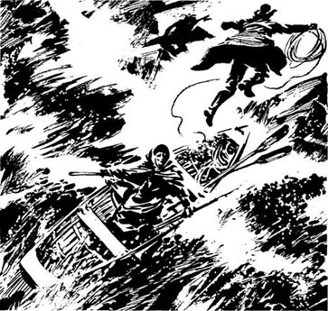
格雷丝迅速将小船划回海里。现在她一个人在船上，船的行进与之前也不一样。她很累，胳臂和背都很疼。但是她知道该怎么划船。“要一直注意海，”她告诉自己，“海浪必须先碰到船头，否则就会翻船。忘记寒冷，忘记雨水，忘记浑身的潮湿。上帝会帮助我的。”
礁石上，威廉·达林飞快地说着话：“我要带上这位女士，”他说，“还有那边那位先生，腿骨折的那位。我还需要三位强壮的先生，来帮我划船。”他看着丹尼尔·多诺万和另外两人，“你，先生，还有你，还有你。其他人在这里等着，我们一会儿回来接你们。”
“不，老天作证！为什么是我？”詹姆斯·凯利喊道，“我想现在就去！”
“你得留在这里，先生！”威廉怒吼道，“你不懂吗？如果你上了船，我们都会淹死！”
“还有我的孩子，”道森夫人哭喊着，“别忘了我的孩子们！”
威廉不快地看着她。他伸出手，说：“把他们给我，孩子妈妈。”
他小心地把男孩和女孩接过来，把两个小小的身体放在靠近海的礁石上。他们已经死了，身体冰冷。“他们已经在上帝手里了，妈妈。”说完，他迅速而平静地对丹尼尔·多诺万说：“船一来，帮我把这位女士弄上去。我们不能带着她的孩子。”
丹尼尔同意了。威廉搂着道森夫人，向格雷丝挥手。
她谨慎而缓慢地划着船靠近礁石。父亲不在，划船变得更加艰难。风浪对小船的冲击更快了，而且格雷丝现在非常疲惫。一个错误就会导致所有人丧生。她靠近了——二十米，十米，七米，五米……一个巨浪将小船托起，接着又一个小浪。她努力地划着桨，向礁石上的一个人扔出了一条绳子。片刻后，她的父亲上了船，胳臂里搂着一个女人，女人在尖叫。
“我的孩子！带上孩子们，求求你了！”
“不行，孩子妈妈。”威廉·达林接过桨。“你来照顾她，格雷丝。”
格雷丝和女人一起走到船尾并扶住她。丹尼尔·多诺万和另外两个男人也上来了。他们抬着断了腿的男人。船头现在很靠近礁石——太近了。格雷丝一回头，看到一个巨浪。
“快划，爸爸！”她喊道，“用力划！”她站起来，用一只桨在礁石上使劲一撑。小船承载着这么多人，现在变得非常沉。
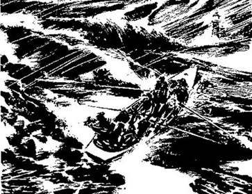
威廉奋力划桨。大浪卷过来，在他们四周溅起白色的浪花。但是船没有撞到礁石。威廉接着划，喊道：“男人们动手帮我！拿起桨，一人一只！”
小船满载，船舷刚刚高出水面，不时有水灌进来。格雷丝用帽子将水泼出去。现在他们逆着风浪前进，四个男人必须使劲划。但是慢慢地，十分缓慢地，灯塔近了。最后，他们在浪尖上时，可以看得见托马辛·达林了。她站在灯塔前，向他们招手。
到达灯塔时，他们都累极了。威廉和丹尼尔将断腿的男人抬进厨房，格雷丝和母亲扶着道森夫人。
在厨房里，威廉冲着女儿笑了。“你干得很好，女儿，”他说，“谢谢你。”
“我再和您去一趟，爸爸。”她说。
“不，”他说，“你太累了。我从他们中找两人带去。”他看着丹尼尔和另外两个男人，问：“哪两个最强壮？”
丹尼尔非常累。厨房里有炉火——温暖而美丽的炉火。他想躺在炉火前，长长久久地睡上一觉。但是威廉·达林棕色的双眼正平静地看着他。
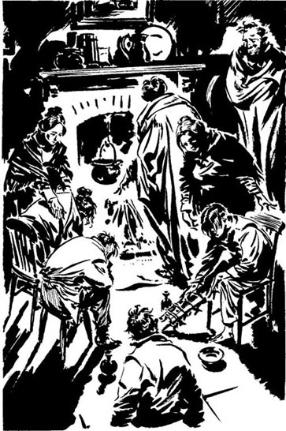
“我跟您去。”丹尼尔说。
“我也去。”托马斯·布坎南说。
威廉·达林笑了。“好样儿的，”他说，“你们两个男人能划得和我女儿一样好吗？”
丹尼尔看着格雷丝，她正忙着照顾道森夫人。在这儿，在这个厨房里，她看起来很瘦小——和一般的年轻姑娘没什么两样。“我会尽力。”他说。
“好，”威廉说，“那么来吧。”
于是丹尼尔和托马斯·布坎南尾随着这位年老的灯塔守望人离开温暖的厨房炉火，再次回到风雨中。丹尼尔看着怒海狂涛，感觉又冷又怕。他回想起哈克礁旁那个瘦小的姑娘独自划船的景象。“伟大的上帝！”他想，“是您让那个姑娘充满力量，就像天使一样。让我也充满力量吧，就像她一样。”
《泰晤士报》 伦敦，1838年9月19日
达林先生和他年轻的女儿从福法尔郡号残骸中救出了九个人。暴风雨持续了三天，他们一直和达林一家一起待在灯塔里。
维多利亚女王认为格雷丝·达林是本国最杰出的年轻女性之一，并写信向她致谢。一百年后，人们仍会记住这一天。
ACTIVITIES: Before Reading
ACTIVITIES
Before Reading
1．Read the story introduction on the first page of the book. How much do you know now about the story? Tick one box for each sentence.
1) The story is true.
YES □／NO □
2) Grace Darling was a young man.
YES □／NO □
3) The story happened in 1838.
YES □／NO □
4) The For farshire was a ship.
YES □／NO □
5) The story happened off the northeast coast of Scotland.
YES □／NO □
6) It was a hot, dry night.
YES □／NO □
7) There was a wooden boat and an iron ship.
YES □／NO □
8) Some people were dying of cold on a rock.
YES □／NO □
9) Grace Darling was very frightened.
YES □／NO □
10) Grace Darling became famous.
YES □／NO □
2．Which of these things can mean danger for a ship at sea? Explain why or why not.
| strong wind | fish | islands |
| blue skies | snow | very deep water |
| rocks | big waves | other big ships |
| sea birds | very hot sun | small sailing boats |
| heavy rain | storms | the dark |
ACTIVITIES: While Reading
ACTIVITIES
While Reading
1．Read Chapter 1. On the ship Daniel Donovan starts to feel very afraid. Use these words from the story to complete the text. (Use each word once.)
angel, broken, dark, engines, frightened, happen, Land, ship, stopped, waves, wind, worse
I feel very ______. The ship's ______ have ______ down and the big paddle wheels have ______.
The weather is getting ______ and it's nearly ______ now. We can't see the ______ any more. There is a very strong ______ and big ______ are hitting the side of the ______.
Everybody on the For farshire is afraid. We don't know what is going to ______. We need an ______ to save us!
2．Read Chapter 2, and then answer these questions.
1) Who was in the lighthouse that night?
2) Where were Grace's brothers?
3) How old were Grace, William and Thomasin?
4) What did William and Grace do to the lantern?
5) What was the lantern for?
6) If there was a shipwreck, what did William have to do?
3．Read Chapters 3 and 4. Here are some untrue sentences about them. Change them into true sentences.
1) The ship's engines were new.
2) The ship's engineer could mend the engines.
3) Daniel Donovan wanted the ship to stay at sea.
4) Grace never got up in the night to help her father.
5) They carried the oars into the kitchen.
6) William watched the light, and Grace went to bed.
4．Read Chapters 5 and 6. Who said this?
1) 'I'm so frightened. Do you think we're going to die?'
2) 'Rocks! There are rocks in front of us, rocks all around!'
3) 'There's a ship on Harker's Rock.'
4) 'I can see no one, but my eyes are old.'
5) 'If there are people alive on that ship now, you cannot save them, William.'
6) 'If there is someone alive, we can't just leave them to die.'
5．Read Chapters 7, 8 and 9. Choose the best question-word for these questions, and then answer them.
Why/Who/What
1) ... prayed on the rock in a loud voice?
2) ... did Daniel want everybody to do?
3) ... was it difficult to stand at the top of the rock?
4) ... first saw the people on the rock?
5) ... was Grace angry?
6) ... was the matter with Mrs Dawson's children?
7) ... first saw the boat?
6．Before you read Chapter 10 (the title is "Too Many People"), can you guess what happens? Tick one box each time.
1) Grace gets very tired and cannot row any more.
YES □／NO □
2) Grace falls into the sea and William pulls her back into the boat.
YES □／NO □
3) Mrs Dawson falls into the sea and drowns.
YES □／NO □
4) William and Grace can only take five people in the boat.
YES □／NO □
5) They leave Mrs Dawson's dead children on the rock.
YES □／NO □
6) The rest of the people on the rock die.
YES □／NO □
7) William takes the boat back a second time and saves more people.
YES □／NO □
7．Read Chapter 10, then answer these questions.
1) What did William and Grace do when they arrived at the rock?
2) Why did William need two strong men?
3) What did Grace use her hat for?
4) Who went back in the boat the second time?
5) How many people did William and Grace save?
ACTIVITIES: After Reading
ACTIVITIES
After Reading
1．Thomasin Darling wrote a letter to her son William, telling him about the stormy night. Can you find and correct the twelve mistakes in it?
The Lighthouse, Longstone Island
Dear William,
I have so much to tell you! We have had a terrible storm here. It lasted for forty-eight hours, and the waves were more than two metres high!
A ship called the Scotland was wrecked on the beach. It was a small ship and it broke into four pieces. All of the passengers climbed onto Harker's Rock.
I was the first person to see the shipwreck and the passengers waving on the rock. Your father and Grace then got the boat out and rowed to the rock, but only four people could get in our little boat. The passengers did not help to row the boat back, and then your father and one other man went to the rock a second time and saved four more passengers.
Your sister Grace is now a famous heroine, and the King is writing to thank her — it's in all the newspapers!
Come home soon.
Love from Mother
2．Find the answers to this crossword in the story.
ACROSS
1 Grace watched the ship through a _______. (9)
4 The ship was going _______, from Hull to Dundee. (5)
6 The name of the ship. (11)
9 You row a boat with two of these. (4)
12 Daniel Donovan's job. (8)
13 Land which is not an island. (8)
14 To move a boat with oars. (3)
15 The ship was _______ in 1838. (7)
DOWN
2 The Darling family lived in this. (10)
3 Grace put _______ in the big lantern. (3)
5 Grace Darling was a famous _______. (7)
7 Daniel Donovan called Grace Darling an '_______'. (5)
8 A man who works on a ship. (6)
10 The floor on a ship. (4)
11 Longstone Island was one of the _______ Islands. (5)
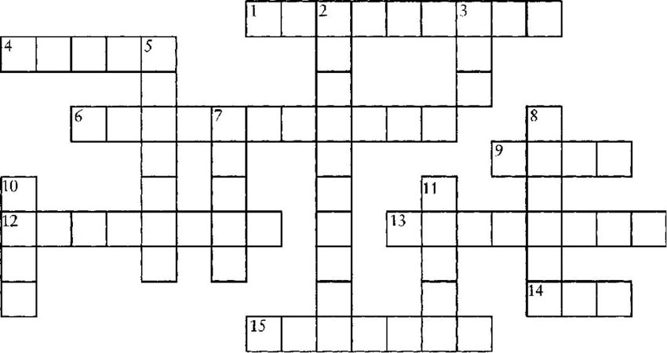
3．A reporter asked Daniel Donovan about the second journey to Harker's Rock. Complete their conversation. (Use as many words as you like.)
Reporter: What happened when you arrived at the lighthouse?
Daniel: William Darling asked _______.
Reporter: How did you feel about that?
Daniel: I wanted _______ but _______.
Reporter: So the two of you rowed back to Harker's Rock.
Daniel: No, there _______.
Reporter: Was the storm still bad?
Daniel: Yes, the waves _______.
Reporter: Were you afraid?
Daniel: Very. But Grace Darling _______.
Reporter: And what do you think of Grace Darling?
Daniel: She's _______.
4．William Darling took the woman and the man with the broken leg first. Imagine that you are saving people from a shipwreck, but your boat is small and you can only take four people. Which of these people do you save and why?
1) A mother and her young child
2) A doctor (older woman)
3) A nurse (young man)
4) A bus-driver (older man)
5) A schoolboy (16 years old)
6) A famous film star (young woman)
7) A teacher (older woman)
8) A businessman (older man)
5．Do you agree (A) or disagree (D) with these sentences? Explain why.
1) The Captain of the For farshire was only doing his job. He wanted to take his ship and passengers to Scotland, and he was right not to go back to land.
2) Thomasin Darling didn't want Grace and William to go to the rock. She was right because it was a very stupid and dangerous thing to do.
3) Grace Darling was a famous heroine only because she was a young woman. William Darling, Daniel Donovan, and Thomas Buchanan were also heroes.
4) Grace Darling is not a special story. Grace and William Darling were only doing their jobs. People like firemen and policemen save people every day.
6．Here are some different titles for the story. Which ones are good (G) and which are not good (NG)? Can you say why?
| Grace and William | Darling Heroine |
| The Angel from the Lighthouse | Shipwreck |
| The Captain Who Didn't Go Back | A Stormy Night |
| The End of the For farshire | Harker's Rock |